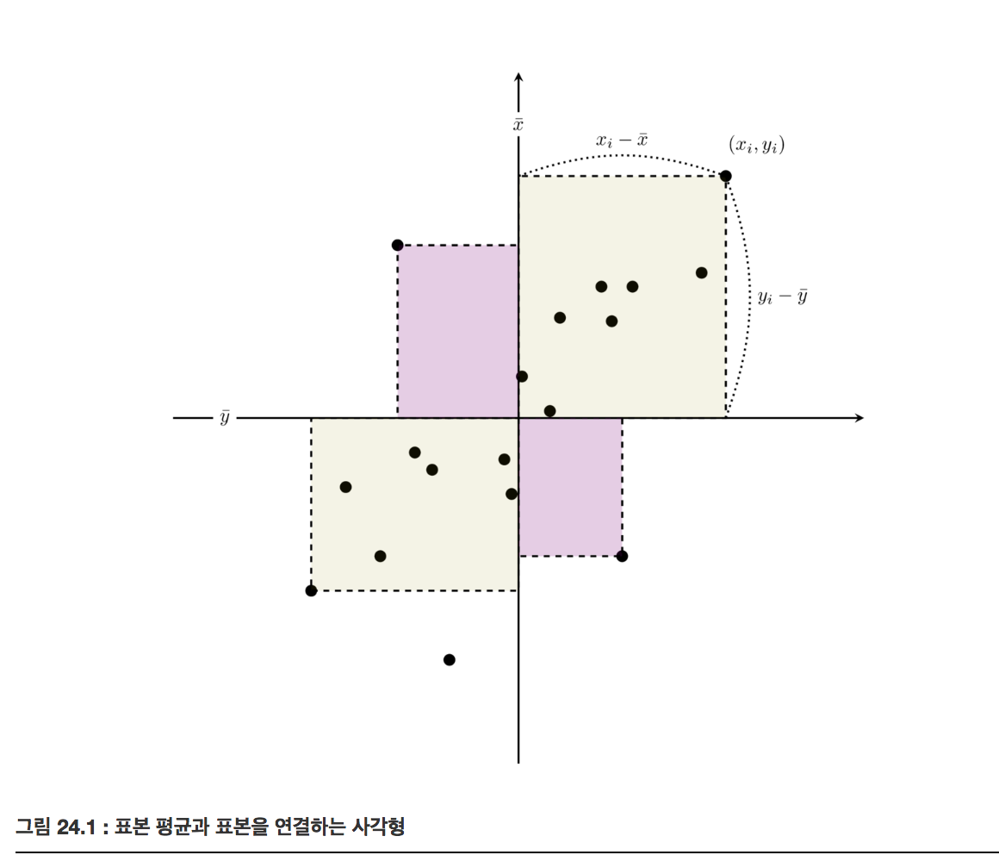
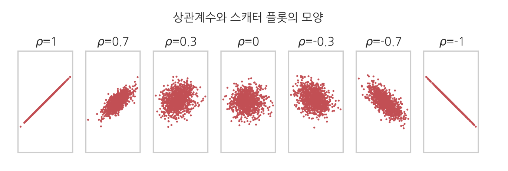
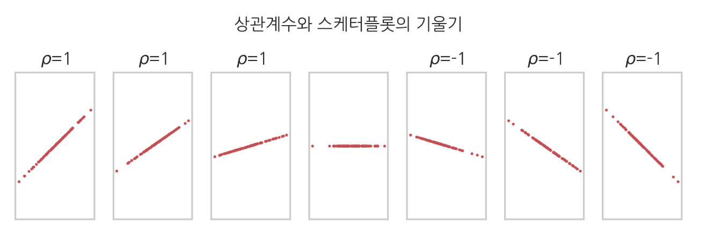

공분산과 상관계수
Summary
- 표본공분산은 자료가 평균 값으로부터 얼마나 떨어져 있는지를 나타내고 평균을 중심으로 각 자료들이 어떻게 분포되어있는지 크기와 방향성을 같이 보여준다.
- 상관계수는 자료 분포의 방향성만 분리하였다. 공분산을 각각의 표본표준편차값으로 나눈 값이다.
- 크기는 분산으로도 알 수 있게 때문에 굳이 표본공분산의 크기, 방향성이 둘 다 필요하지 않아서 상관계수는 방향성만 분리하였기 때문에 상관계수를 사용한다.
- 표본공분산행렬은 서로 다른 확률변수의 모든 조합에 대해 공분산을 한꺼번에 표기한 것이다. 대각성분은 각각의 확률변수의 분산, 비대각성분은 서로 다른 두 확률변수의 공분산으로 정의되는 행렬이다.
표본공분산
표본공분산(sample covariance)은 자료가 평균 값으로부터 얼마나 떨어져 있는지를 나타낸다. 평균을 중심으로 각 자료들이 어떻게 분포되어 있는지 크기 와 방향성 을 같이 보여준다.
와 는 각각 번째의 자료와 자료의 값을 가리키고, 와 는 자료와 자료의 표본평균을 가리킨다.
공분산은 평균값 위치와 표본 위치를 연결하는 사각형의 면적을 사용한다. 공분산의 경우 자료의 위치에 따라 이 값의 부호가 달라진다. 1, 3사분면은 양수, 2, 4사분면은 음수
공분산의 부호는 데이터가 같은 부호를 가지는지 다른 부호를 가지는지에 대한 지표

표본상관계수
표본상관계수(sample correlation coefficient)는 자료 분포의 방향성만 분리하여 나타낸다.
공분산을 각각의 표본표준편차값으로 나누어 정규화(normalize)하여 정의
다른 종류의 상관계수와 비교하여 말하는 경우에는 피어슨(Pearson) 상관계수 라고 한다.
확률변수의 공분산과 상관계수
두 확률변수 의 공분산은 기댓값 연산자를 사용하여 다음과 같이 정의
두 확률변수 의 상관계수
확률변수의 상관계수는 다음과 같은 성질을 가진다
가 -1, 0, 1인 경우
- : 완전선형 상관관계
- : 무상관(독립과는 다름)
- : 완전선형 반상관관계

- 상관계수는 스캐터 플롯의 기울기와는 아무런 상관이 없다.

비선형 상관관계
비선형 상관관계는 피어슨 상관계수가 0이지만 비선형으로 상관관계가 있다
다변수 확률변수의 표본공분산
이번에는 스칼라가 아닌 벡터 표본값을 가지는 다변수 확률변수의 공분산에 대해 알아보자. 이라는 개의 서로 다른 확률변수가 있다고 하자. 이 확률변수들의 표본 데이터가 각각 개가 있으면 번째 확률변수의 번째 데이터를 ,로 표기한다. 이를 하나의 행렬로 묶으면 다음과 같은 특징행렬이 된다.
개의 서로 다른 확률변수의 모든 조합에 대한 공분산을 한꺼번에 표기하기 위해 표본공분산 행렬(Sample Covariance Matrix) 을 정의한다.
대각성분은 각각의 확률변수의 분산, 비대각성분은 서로 다른 두 확률변수의 공분산으로 정의되는 행렬이다.
다변수 확률변수의 공분산
다변수 확률변수의 이론적 공분산 행렬은 로 표기하며 다음처럼 정의한다.
다음과 같이 표기할 수 있다.